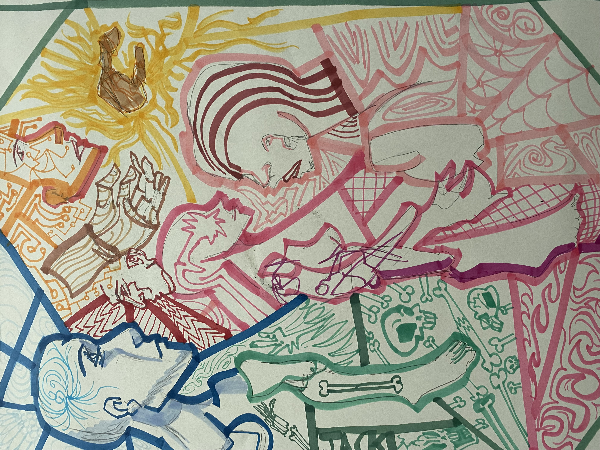
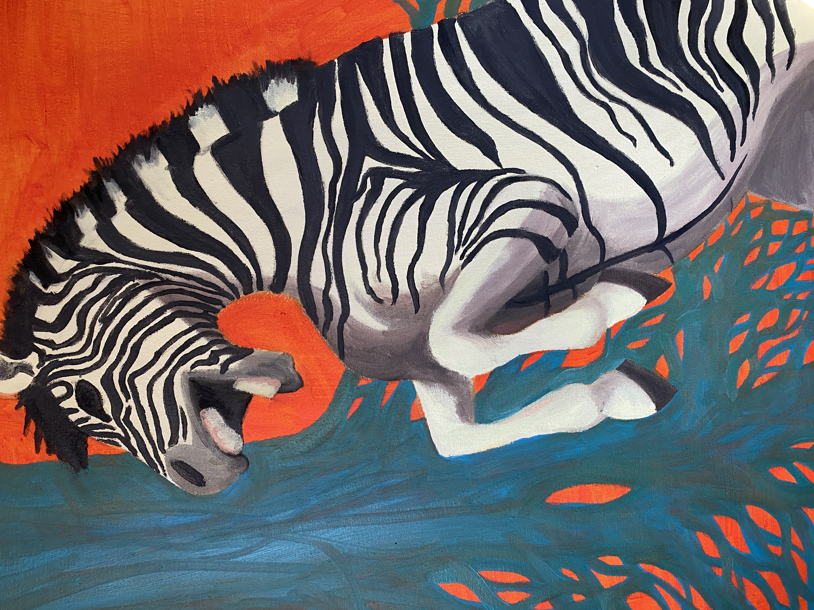
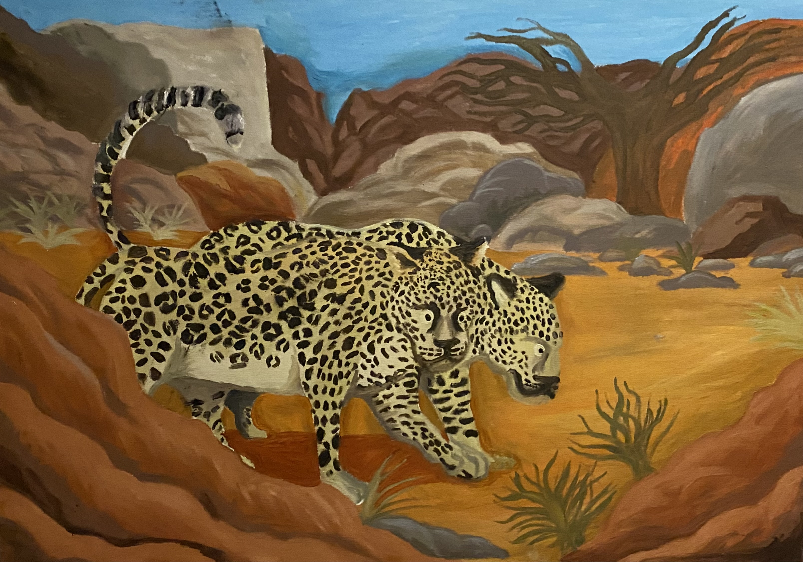
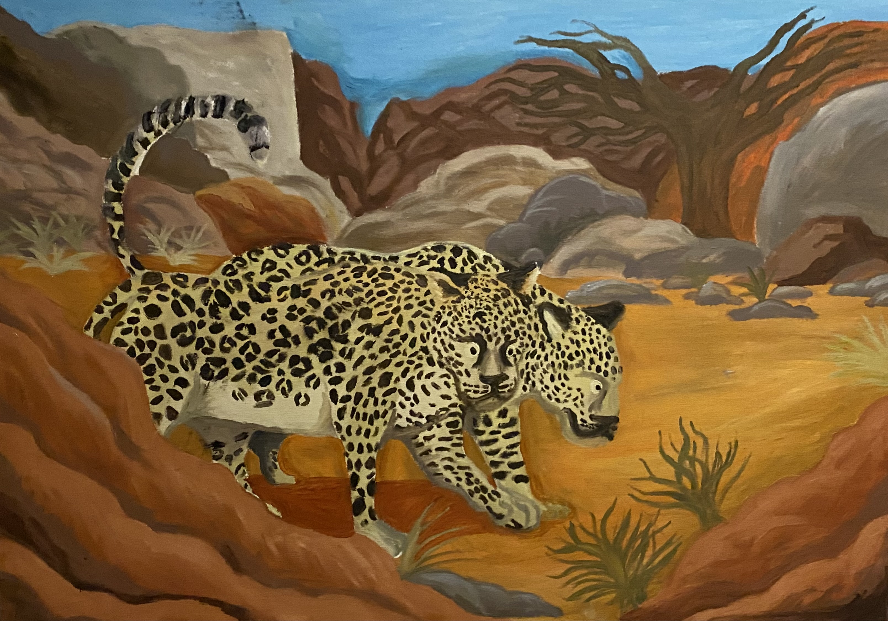
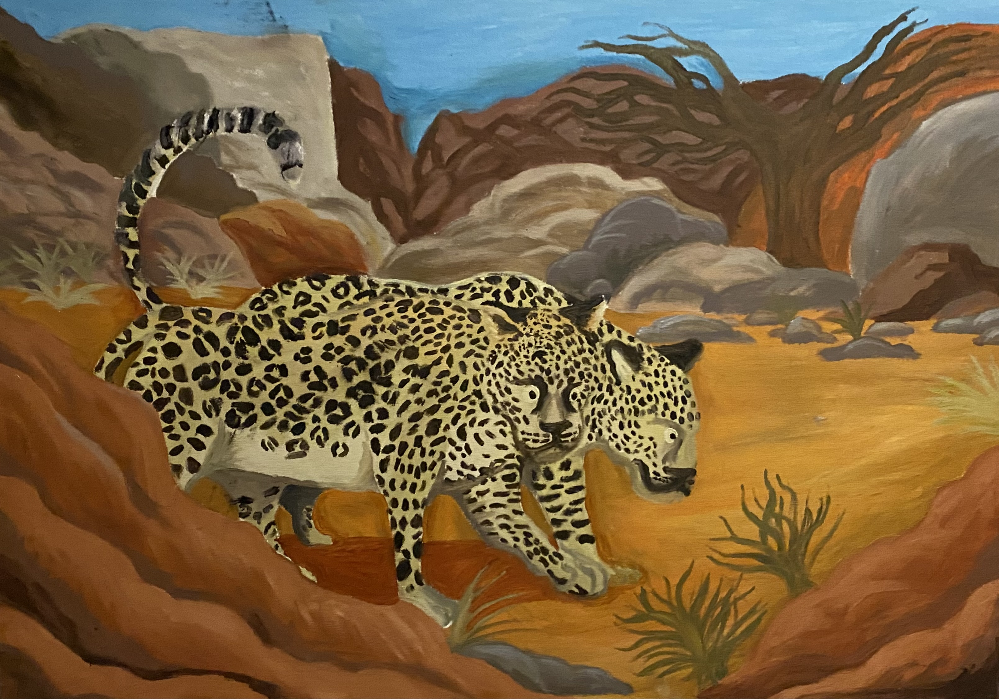

Physical Artwork


 


This is my physical artwork! The interesting things about physical media is that they can be divided into wet and dry media. On the rightside of the grid is the work I've done in wet media, painting both on canvas. the two on the left are dry media. Both of these projects were done with the hope to bring more awareness to the two endangered species. These two pieces are done in dry media with them being done in marker. The two pieces on the left share more then being very saturated they are also pieces on the human figure.